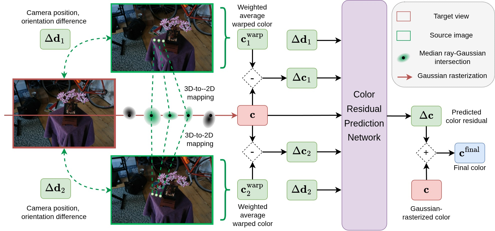
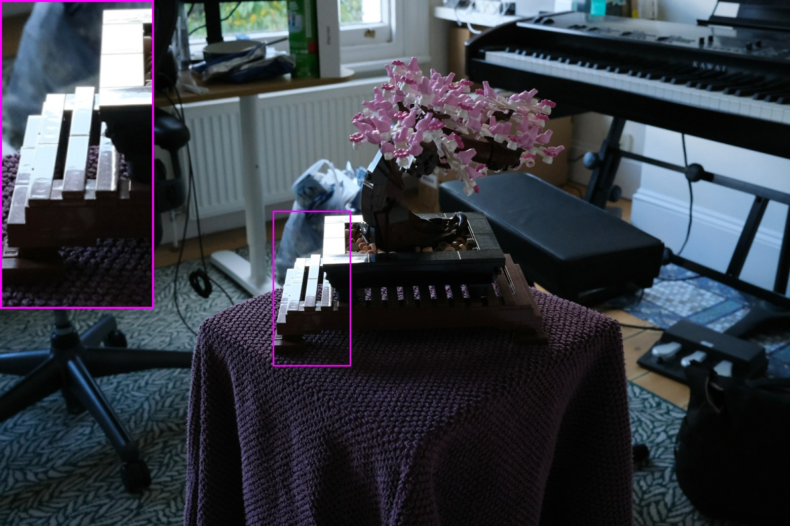
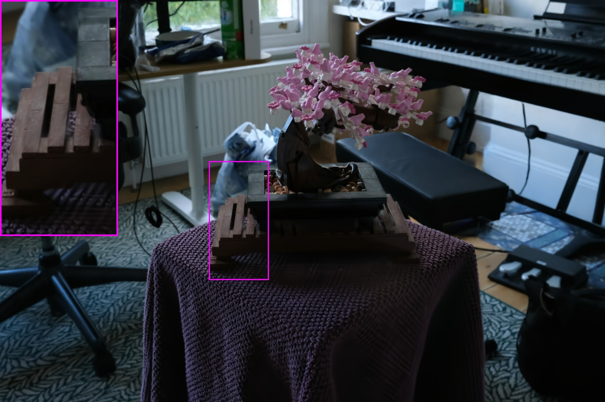
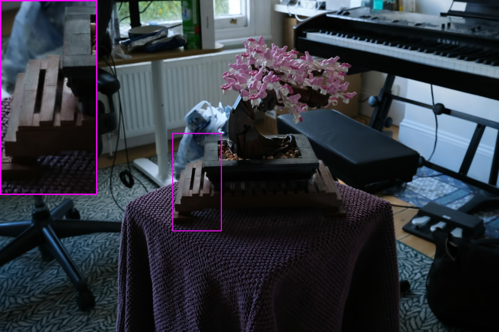
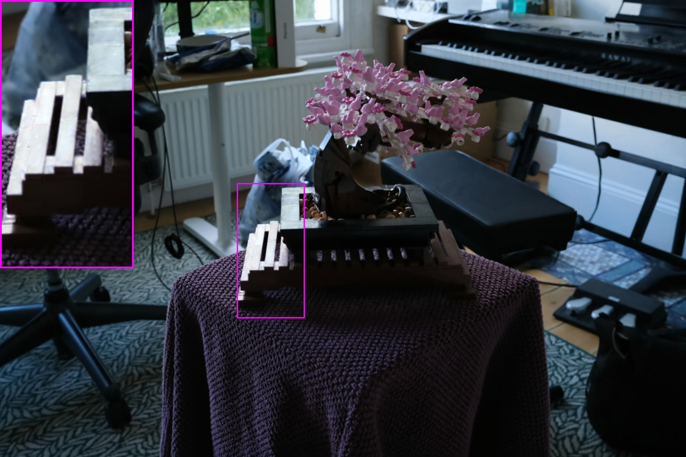
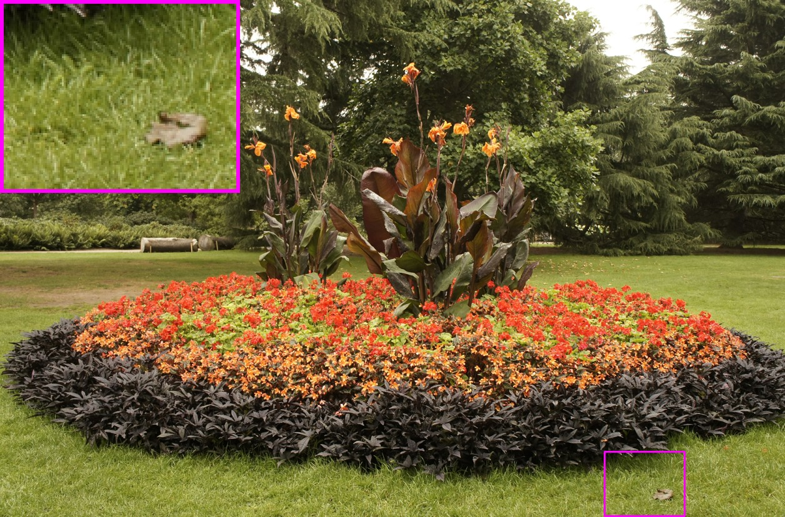
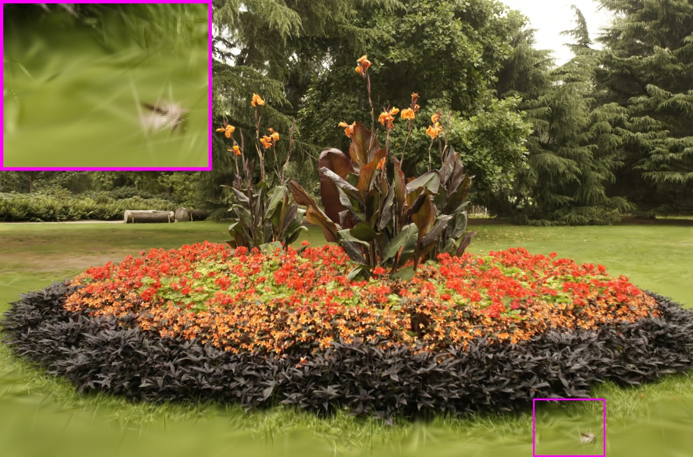

This website is created using the template provided by Nerfies.
IBGS: Image-Based Gaussian Splatting
Base image \(\textbf{C}\)
Color Residual \(\Delta \textbf{C}\)
Final image \(\textbf{C}^{\text{final}}\)
Abstract
3D Gaussian Splatting (3DGS) has recently emerged as a fast, high-quality method for novel view synthesis (NVS). However, its use of low-degree spherical harmonics limits its ability to capture spatially varying color and view-dependent effects such as specular highlights. Existing works augment Gaussians with either a global texture map, which struggles with complex scenes, or per-Gaussian texture maps, which introduces high storage overhead. We propose Image-Based Gaussian Splatting, an efficient alternative that leverages high-resolution source images for fine details and view-specific color modeling. Specifically, we model each pixel color as a combination of a base color from standard 3DGS rendering and a learned residual inferred from neighboring training images. This promotes accurate surface alignment and enables rendering images of high-frequency details and accurate view-dependent effects. Experiments on standard NVS benchmarks show that our method significantly outperforms prior Gaussian Splatting approaches in rendering quality, without increasing the storage footprint.
Method Overview
We propose a novel residual color prediction module, which produces a residual term capturing high-frequency details and view-dependent effects. The rendering process of IBGS can be summarized as:
- Find intersections between a camera ray and close-to-surface Gaussians.
- Project the intersections onto multiple training images, and obtain colors at the projected pixels.
- The color residual prediction network takes the warped colors to predict color residuals.
- The predicted residuals are then added to the base color to obtain the final pixel color.

Novel-view Synthesis
View-Dependent Colors




High-Frequency Details


BibTeX
@inproceedings{
nguyen2025ibgs,
title={{IBGS}: Image-Based Gaussian Splatting},
author={Hoang Chuong Nguyen and Wei Mao and Jose M. Alvarez and Miaomiao Liu},
booktitle={The Thirty-ninth Annual Conference on Neural Information Processing Systems},
year={2025},
url={https://openreview.net/forum?id=AZLj6ObEDF}
}